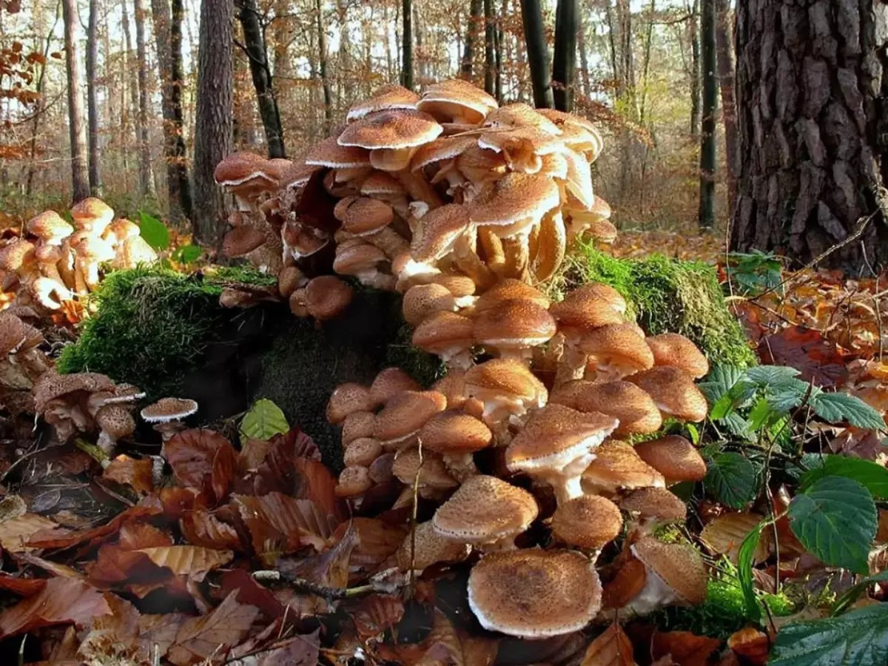
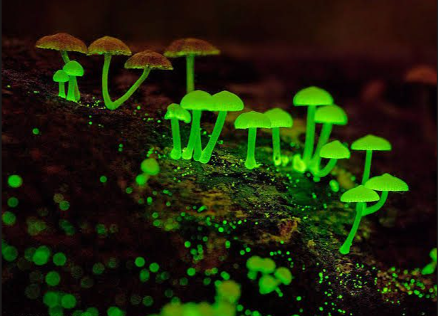
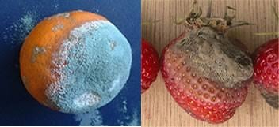

Fatos Surpreendentes sobre os Fungos
O Maior Organismo Vivo
O fungo Armillaria ostoyae (conhecido como cogumelo-mel) no estado do Oregon (EUA) é considerado o maior organismo do mundo em área. Ele se estende por cerca de 9 quilômetros quadrados por baixo do solo e estima-se que tenha milhares de anos de idade.

Bioluminescência
Algumas espécies de fungos, como as do gênero Mycena, possuem a capacidade de brilhar no escuro. Esse brilho esverdeado atrai insetos noturnos, que auxiliam na dispersão dos esporos do fungo pelo ambiente.

Fungos "Zumbis"
O fungo parasita Ophiocordyceps unilateralis infecta formigas e assume o controle de suas funções motoras. Ele direciona o inseto para uma posição ideal para o crescimento do fungo, onde a formiga morre e o fungo rompe sua cabeça para liberar novos esporos.
.png)
A Importância dos Decompositores
Sem os fungos e as bactérias saprófitas, a matéria orgânica morta se acumularia no planeta. Eles decompõem folhas, troncos e restos de animais, devolvendo nutrientes essenciais ao solo para serem reutilizados pelas plantas.

Você sabia?: O Cogumelo do Mario
O Amanita muscaria é a inspiração visual do "Super Mushroom" do Mario, mantendo o clássico chapéu vermelho com pontos brancos.
Sua mecânica de crescimento foi baseada em Alice no País das Maravilhas, onde o consumo de cogumelos altera o tamanho da protagonista.
Cientificamente, esse fungo causa distorções de percepção chamadas "Síndrome de Alice", fazendo objetos parecerem maiores ou menores.
O criador Shigeru Miyamoto utilizou esse simbolismo folclórico para estabelecer a identidade mágica de todo o Reino do Cogumelo.
Essa conexão transformou o Amanita no ícone de transformação mais famoso dos games, unindo biologia, literatura e design de software.